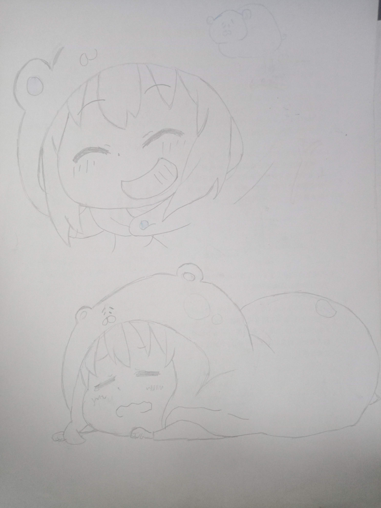

2024.2.13 (之前整合版)
初音未来(临摹)
SkimrMe(自己尝试绘制的烂图)
Windows娘(临摹)
绊爱(临摹)
初代画(可以说是我画的第一幅画)
元首临摹(临摹)
顶之白(临摹)
一些东方图(临摹)
(草，拍糊了😂)
抖抖村的村长....(临摹)
格林达姆(临摹)
古拉(临摹)
谷歌娘(临摹)
狐狸娘(临摹)
火狐娘(临摹)
健康的笑容(临摹)
角卷绵芽(临摹)
教主蓝蓝路(临摹)
(草，混入了奇怪的东西😂)
俊达萌(临摹)
小鸟游六花(临摹)

猫猫(临摹)
(好极霸wwwwww😂)
一些猫娘(临摹)

猫又小粥(临摹)
辟谷(临摹)
瑞克和莫蒂(临摹)
圣物！！(临摹)
(个人的一个小小的xp🤞)
一些手部图(临摹)
维基娘(临摹)
我妻善逸(临摹)

香蕉君(临摹)
小埋(临摹)
新石纪的西瓜吧.....(临摹)
杏仁咪噜(临摹)
(难绷，我把自己画的好烂啦！！)
眼睛(临摹)
一些人体集(临摹)
不好分类合集(临摹)
(就是不想细分了........)

奇怪的东西点击展开|折叠
不好说的人物,自己看吧(临摹)
点击展开|折叠